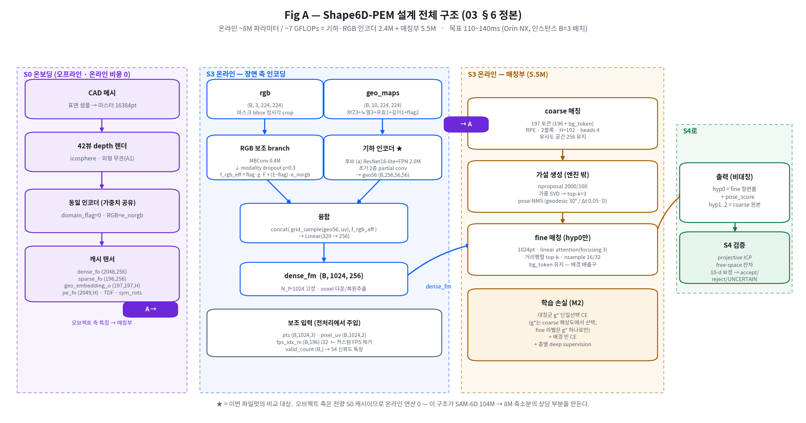
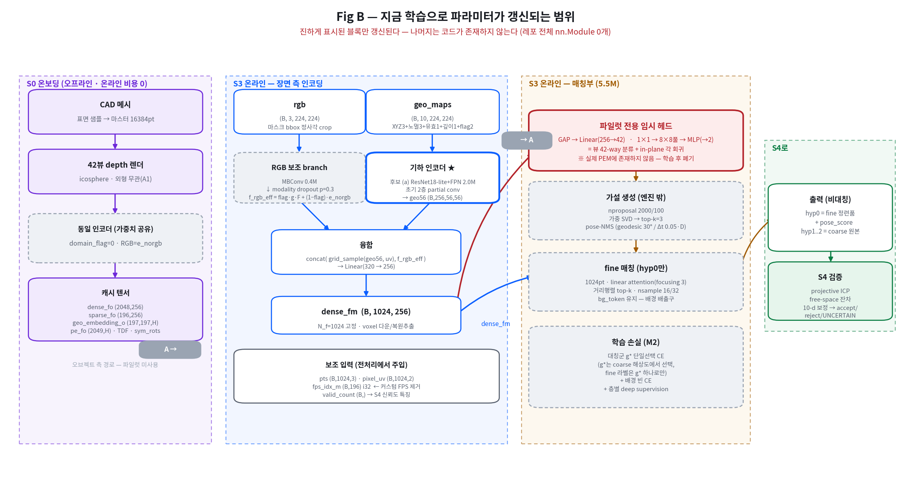

nn.Module 0개).
| 단계 | 연산 | 텐서 변환 | 역할 |
|---|---|---|---|
| 입력 | 마스크 bbox → 정사각 crop → 224 리사이즈 | rgb (B,3,224,224)geo_maps (B,10,224,224) | geo 10채널 = XYZ(3)+노멀(3)+유효마스크(1)+정규화깊이(1)+flags(2). 유효마스크가 1급 채널인 것이 희소 대응의 요체 |
| 인코딩 | 기하 인코더 (필터: 3×3 conv + partial conv 초기 2층) | → geo56 (B,256,56,56) | stride-4 조밀 특징맵. 유효밀도 1~2%에 대응해 y = conv(x⊙m)·k²C/(conv_ones(m)+ε) |
| 보조 | RGB branch (MBConv) + modality dropout | → f_rgb_eff | RGB 결측을 예외가 아니라 학습된 정규 상태로. 추론 그래프가 갈라지지 않아 TRT 정적 유지 |
| 융합 | grid_sample(geo56, uv) ⊕ f_rgb_eff → Linear(320→256) | → dense_fm (B,1024,256) | 1024개 관측점 각각의 특징 벡터. 여기까지가 인코더의 일 |
| coarse | 197토큰 cross-attention 2블록, H=192, heads 4, RPE | 장면 196 ↔ CAD 196 (+bg) | 양측 특징의 유사도 행렬을 만든다. 유사도 공간은 256 유지(teacher distill 정렬용) |
| 가설 | nproposal 2000/100 → 가중 SVD → top-3 + pose-NMS | → (R,t) ×3 | 대칭 물체의 다중 해를 S4로 넘긴다. 엔진 밖 후처리(3×3 행렬, CPU µs급) |
| fine | 1024pt linear attention(focusing 3), bg_token 유지 | hyp0만 정련 | bg_token은 배경 혼입의 배출구 — 제거하면 배경점이 억지로 대응된다 |
| 출력 | 비대칭 3가설 | hyp0=fine+score, hyp1..2=coarse | S4가 free-space 증거로 최종 판정 |

| 모듈 | 설계 파라미터 | 현재 파일럿 | M2 본학습 | 비고 |
|---|---|---|---|---|
| 기하 인코더 | 2.0M (후보 a) | 갱신 1.33M | 갱신 | 파일럿의 유일한 실질 학습 대상 |
| RGB 보조 branch | 0.4M | 미구현 | 갱신 | modality dropout·게이트·e_norgb 전부 미검증 |
| CAD 측 인코더 경로 | 가중치 공유 | 경로 미사용 | 갱신 | 42뷰 depth 렌더 → 동일 인코더. 도메인 갭 흡수 능력 미측정 |
| coarse 매칭 | 합 5.5M | 미구현 | 갱신 | RPE·bg_token·유사도 행렬 |
| fine 매칭 | 미구현 | 갱신 | linear attention·거리행렬 top-k | |
| 대칭 손실 g* | 파라미터 없음 | 미작동 | 작동 | 손실 설계 — 학습 신호에만 영향 |
| 파일럿 임시 헤드 | 설계에 없음 | 갱신 0.28M | — | GAP→Linear(256→42) + 1×1→8×8풀→MLP. 학습 후 폐기 |
| 합계 | ~8M | 1.61M (인코더 1.33M) | ~8M | 인코더만 보면 전체의 17% |
위 §2의 관찰이 실제로 결과를 좌우하는지 확인하기 위해, 같은 인코더·같은 과제·같은 헤드를 두 데이터에서 학습했다.
| 조건 | 학습 물체 | 검증 물체 | 뷰 top-1 | 회전 p50 | 회전 p90 | ≤30° 비율 | 해석 |
|---|---|---|---|---|---|---|---|
| 단일 CAD (문서 14) | SKID 1종 | 동일 1종 | 0.9930 | 2.6° | 7.5° | 98.8% | 물체를 외운 상태 = 암묵적 템플릿 |
| MegaPose-GSO · a0 | 750종 | 194종 (교집합 0) | 0.1471 | 120.6° | 173.8° | 5.8% | 우연 0.024 대비 6배지만 사실상 실패 |
| 동 · a1 (ImageNet) | 750종 | 194종 | 0.1404 | 119.7° | 172.8° | 6.2% | 인코더를 바꿔도 같다 — 인코더가 아니라 과제의 문제임을 뒷받침 |
| 동 · a1d (DINOv3) | 750종 | 194종 | 0.1689 | 118.5° | 174.4° | 7.3% |
sparsify_fixed_grid, σ=3mm), 물체당 433pt 중앙값.| # | 항목 | 예상 영향 | 분석 |
|---|---|---|---|
| ① | 목적함수 불일치 분류 vs 대응 | 높음 | 파일럿 헤드는 GAP으로 전역 평균을 낸다 — 즉 인코더는 "점들 사이를 구별하라"는 요구를 한 번도 받지 않는다. 반면 PEM은 점별 국소 특징으로 대응을 만든다. 전역 판별에 좋은 특징이 점별 대응에도 좋다는 보장이 없으므로, 파일럿의 후보 순위가 매칭 과제로 전이된다는 근거가 약하다. |
| ② | 가중치 공유 미검증 | 높음 | 설계상 같은 인코더가 장면(희소 LiDAR)과 CAD(42뷰 조밀 depth 렌더)를 모두 처리해야 하고, 두 도메인은 밀도가 약 10배 다르다(10 §6.7). 파일럿은 장면 측만 학습했으므로 이 이중 부담이 인코더 용량에 미치는 영향이 전혀 반영되지 않았다 — 파일럿에서 충분했던 1.33M이 본학습에서 부족할 수 있다. |
| ③ | 대칭 손실 미작동 | 중간 | 문서 14 Fig 3에서 최악 실패가 전부 180° 플립이었고 예측·GT 렌더가 육안 구분 불가였다. 그것을 다루도록 설계된 g* 단일선택 손실은 파일럿에서 작동하지 않는다. 즉 파일럿은 대칭 물체에서의 실제 거동을 재지 못한다. |
| ④ | 배경 혼입 경로 | 중간 | 파일럿 입력은 깨끗한 물체 crop이다. 실제로는 S1 클러스터가 배경·인접 물체를 섞어 넣고, 그것을 bg_token이 배출한다. 배경 강건성은 미검증이며, 이는 인코더 선정에 영향을 줄 수 있다(희소 + 오염은 다른 문제다). |
| ⑤ | 학습 메모리 3배 | 중간 | 03 §9 검증[상-7] — 본학습에서는 CAD 측 2뷰가 gradient 포함으로 인코더를 통과해 활성화가 장면 측의 ~3배가 되고 bs64가 OOM 경계다. 파일럿은 bs 96~192로 여유롭게 돌았으므로 이 제약을 경험하지 않았다. 인코더를 키우는 선택은 파일럿보다 본학습에서 훨씬 비싸다. |
| ⑥ | 전이 가능한 것 | 있음 | 파일럿이 남기는 실질 자산: (a) 예산·격자·TRT 적합성 실측(13 §2 — 렌더 결함과 무관하게 유효) (b) stem 점유율 실측(13 §3) (c) 희소 강건성이 인코더 선정의 판별축이라는 방법론 (d) 데이터 파이프라인·희소화·라벨 분해 코드. 인코더 가중치 자체는 폐기 대상이다(헤드가 다르고 목적함수가 다르므로). |
인코더 선정이 의미를 가지려면, 프록시 과제가 대응 정식화여야 한다. 전체 PEM을 구현할 필요는 없고 최소 매칭부면 된다.
| 순위 | 조치 | 비용 | 근거 |
|---|---|---|---|
| 1 | 최소 매칭부 구현 — CAD 측 특징(캐시) + 장면 특징 → cross-attention 1블록 → soft 대응 → 가중 SVD | 2~3일 | §4 — 이것 없이는 제로샷 과제가 성립하지 않는다. 대칭 손실 없이 시작해도 무방(먼저 대응이 되는지부터) |
| 2 | 과제를 포즈 회귀(측지 오차)로 전환 — 뷰 분류 폐기 | 동반 | ①의 목적함수 불일치 제거. 지표도 top-1이 아니라 회전·병진 오차로 직결 |
| 3 | CAD 측을 실제로 태워 가중치 공유·도메인 갭을 함께 학습 | 동반 | ②. 활성화 3배 문제도 이때 실측된다 |
| 4 | 인코더 후보 재비교 (a0 / ConvNeXt·DINOv3 / PointNet++ / sparse conv) | 4~6런 | 13·14의 순위는 ①이 해소된 뒤에 재확인해야 한다 |
| 5 | 대칭 손실 g* 추가 후 재측정 | 1~2일 | ③ — 플립이 실제로 줄어드는지가 이 손실의 존재 이유 |
재현: build_megapose.py(샤드 → 학습셋, 물체 단위 분할) · train_megapose.py(학습·평가) · fig_arch.py(구조도) — 세션 스크래치패드.
내부: 03 §6·§9 · 10 §2·§6.7 · 14 · 16